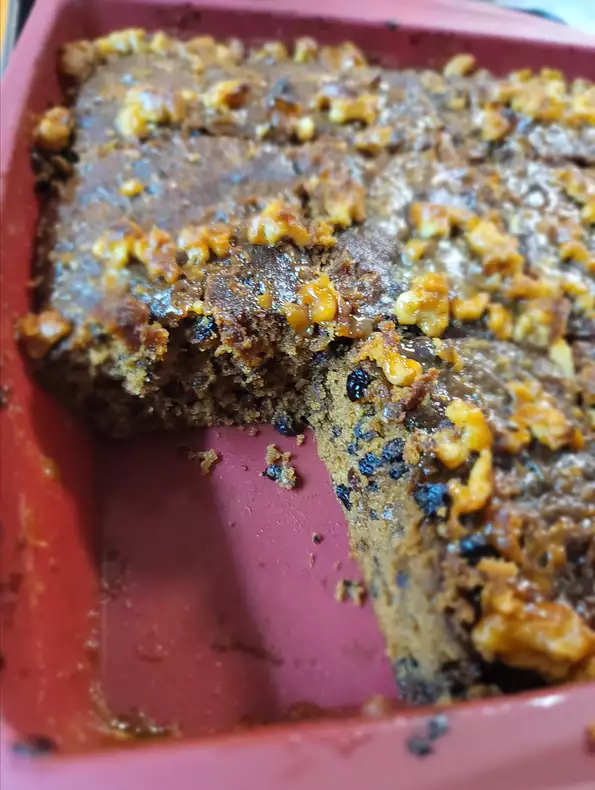
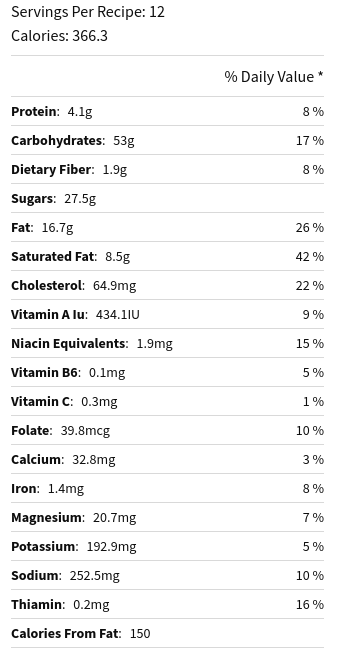

Cake

Date Cake
This date cake is a simple coffee cake with a wonderful flavor and unique broiled topping.
Timings
-
Preparation:
15 mins
-
Cook
55 hr
-
Total
1 hr 10 mins
-
Servings
12
-
Yield
1 9-inch square pan
Nutritional info

Ingredients
- 1 ½ cups water
- 1 ½ cups raisins
- ¾ cup dates, pitted and chopped
- 1 teaspoon baking soda
- ¾ cup white sugar
- ½ cup butter
- 2 large eggs
- 1 teaspoon vanilla extract
- 1 ½ cups all-purpose flour
- ¼ teaspoon salt
Toppings:
- 4 tablespoons butter
- ½ cup brown sugar
- ½ cup chopped walnuts
- 2 tablespoons heavy cream
Steps
- Preheat the oven to 350 degrees F (175 degrees C). Grease and flour a 9-inch square pan.
- Combine water and raisins in a medium saucepan. Bring to a boil and cook for 5 minutes. Remove from heat, then stir in chopped dates and baking soda. Set aside.
- Cream together white sugar and butter in a large bowl until light and fluffy. Beat in eggs one at a time, then stir in vanilla. Add flour, salt, and date mixture; mix until combined. Pour batter into the prepared pan.
- Bake in the preheated oven until a toothpick inserted into the center of the cake comes out clean, about 45 minutes. Remove cake from the oven.
- Set the oven to broil.
- Make topping: Melt butter in a small saucepan. Stir brown sugar, walnuts, and cream into melted butter. Spread mixture over warm cake.
- Place cake under broiler until top is lightly browned, about 3 minutes. Rotate cake as needed for even browning; watch carefully as the top can burn quickly under the broiler.